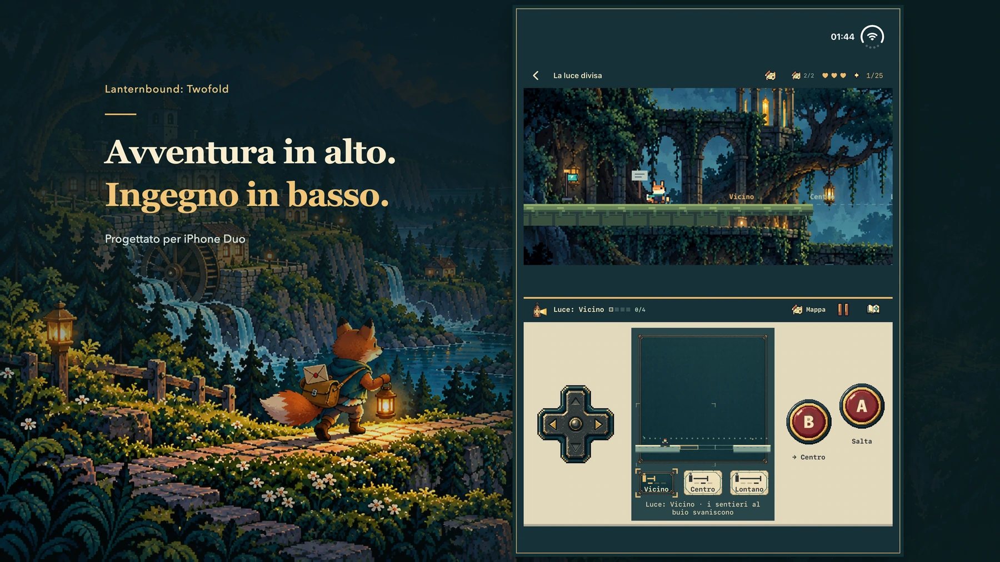

Un’avventura per iPhone Duo
Due schermi. Dodici strade verso casa.
Porta dodici lettere attraverso una valle dimenticata. La tua lanterna illumina la strada e le vite che ti aspettano alla fine.
Scopri come si gioca
Illustrazione promozionale; sotto trovi immagini reali del gioco.
Ogni lettera apre una strada.
La tempesta ha interrotto le strade. La nuova mappa ha dimenticato alcune case. Sei una giovane volpe postina: porti messaggi tra vicini e una lettera personale al mentore che non risponde più. Ogni consegna conduce alla successiva. Recapita le dodici lettere principali per raggiungere il finale completo, poi torna a vedere cosa è cambiato.

iPhone Duo
L’avventura sopra. La prossima mossa sotto.
Il mondo è nella zona superiore; mappa, strumenti e comandi sono sotto. Orienta lo schermo interno con il mondo sopra i comandi. Anche le configurazioni piatte supportate mantengono questa disposizione.
- Muoviti con la croce direzionale, salta con A e usa lo strumento attuale con B.
- Apri il piano per mettere in pausa e studiare il percorso, poi torna al gioco.
- Prepara un meccanismo sotto e affronta il salto sopra. Le tue decisioni cambiano le strade disponibili.
Cerca oltre la strada più evidente.
Segui i segni delle falene nei passaggi bui. Sali verso un sentiero più alto, scendi in una galleria o entra in una stanza nascosta. Ogni capitolo custodisce due ricordi facoltativi con piccole storie da scoprire.


Imparane uno. Combina due idee.
Rivela un percorso con la luce, suona una campana col boomerang, ferma una piattaforma, gira uno specchio o lascia un’eco su un interruttore. Ogni capitolo riutilizza lo strumento in quattro sfide principali e collega due strumenti specifici in enigmi a staffetta. Alcune deviazioni cambiano l’ordine.


Duo 2.0 · Lancio in preparazione · Data di uscita da confermare
Un’avventura completa. Un solo acquisto.
Un’avventura a pagamento progettata prima di tutto per iPhone Duo. Un acquisto comprende tutti i dodici capitoli, senza pubblicità, abbonamenti o acquisti in-app. Prezzo previsto negli USA: 9,99 USD. Prezzi locali definitivi e disponibilità saranno indicati sulla pagina ufficiale dell’App Store.